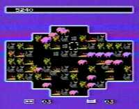

|


Review
Game Type: Puzzle
Designed and programmed by Franz Lanzinger and Dave O'Riva, the geniuses (in my view) who brought you the wicked NES version of Klax. Tiles (creatures) leap into random spots on the grid and you must pick them up and move them into rows, columns, or diagonals of varying lengths to knock them off the board. If you make an extra-long set or clear two groups with one piece you get bonus points. If the screen fills, you're toast. You can play solo or share the board with another player in cooperative or competitive modes.
Gameplay: 90/100
The game is simple enough for a four-year-old to understand, and if it weren't for the insanely fast pace it would be way too easy. But those critters pile onto the screen in droves, so many at once that there's sometimes slowdown (a respite from the action I'm actually grateful for). There are also enough creative ways to score bonus points to challenge a fully-developed cerebrum. There's only one problem - although you'll be fighting for your life in the later rounds, an experienced player is very unlikely to lose in the early stages. Fortunately there's always the stage and difficulty select, and besides, you can go for the tantalizing (and hard to reach) goal of totally clearing the screen...
Graphics: 20/100
Although not exactly an eyesore this is definitely not the most visually pleasing game I've played. The backgrounds are no more than solid colors, the design and animation on the critters is far from appealing, and the color scheme is just plain gross. It's not bad enough to actually detract from the gameplay, but don't buy this game for the graphics.
Sound: 50/100
Very simplistic; there's no music and only a few sound effects are used throughout. But the sound definitely enhances the game, especially the little fanfares that sound as you clear groups. The more complex the matchup, the cooler the fanfare, giving you one more incentive to score well.
Overall: 90/100
There are no cinemas or wild graphic effects or bikini-clad babes in this game. Your sole reward for skillful play is a higher score. If that doesn't scare you off, then I must say congratulations; you're a true gamer, and this is a true gamer's game. It's unique and challenging and just plain fun. Unfortunately it's from an unauthorized third party publisher (American Video Entertainment), and therefore fairly rare. If you've played and enjoyed NES Klax, though, you know that the work of Lanzinger and O'Riva is worth any effort to find.
|